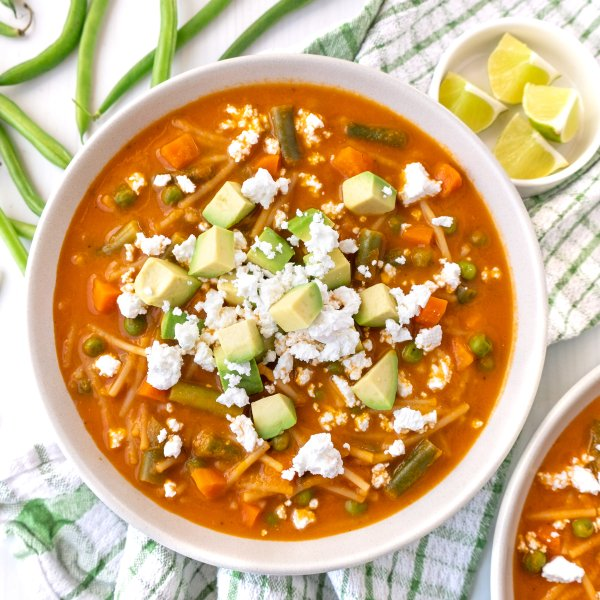

Mexican Tomato Soup (Sopa de Fideo) with Pasta, Avocado & Feta

Total Time
35 min
Nutrition (per serving)
652.4 kcalCalories
24.3 gProtein
68.7 gCarbs
34.8 gFat
Full nutrition table
| Calories | 652.4 kcal |
| Total fat | 34.8 g |
| Saturated fat | 17.3 g |
| Trans fat | 1.1 g |
| Cholesterol | 71.6 mg |
| Sodium | 461.6 mg |
| Carbohydrates | 68.7 g |
| Fiber | 12.5 g |
| Sugars | 16.7 g |
| Protein | 24.3 g |
| Potassium | 1635.2 mg |
| Calcium | 255.6 mg |
| Iron | 5.7 mg |
| Vitamin A | 2102 IU |
| Vitamin C | 50.6 mg |
| Vitamin D | 17.5 IU |
Cookware
Ingredients
- 1avocado
- 2 mediumcarrots
- 48 fl ozchicken or vegetable broth
- 1 (4 oz) pkgcrumbled feta cheese
- 1 cupfrozen peas
- 4 clovesgarlic
- ½ lbgreen beans
- 1lime
- 6 ozspaghetti pasta
- 4tomatoes
- 2 (8 oz) canstomato sauce
- 1 mediumyellow onion
- black pepper
- butter, unsalted
- cumin, ground
- oregano, dried
- salt
Steps
- Wash and dry the fresh produce.4 tomatoes
2 medium carrots
½ lb green beans
1 avocado
1 lime - Peel and large dice onion. Large dice tomatoes; place both in a medium bowl.1 medium yellow onion
- Preheat a large pot over medium-high heat.
- While the pot heats up, peel and roughly chop garlic.4 cloves garlic
- Once the pot is hot, add butter and swirl to coat the bottom. Add onion, tomatoes, garlic, and salt; cook, stirring occasionally, until veggies start to soften, about 5 minutes. Remove from heat. (Reserve bowl for next step.)¼ cup butter, unsalted
¼ tsp salt - Meanwhile, peel, trim, and small dice carrots. Trim and cut green beans into 1-inch pieces. Place both in the reserved bowl and set aside.
- Working in batches if necessary, transfer the tomato-onion mixture to a blender and blend on high until smooth; set aside.
- Use your hands to break the pasta into 1-inch pieces.6 oz spaghetti pasta
- Return pot to the stove over medium-high heat; add more butter and swirl to coat the bottom. Add the pasta and cook, stirring constantly, until it turns golden, 1-2 minutes.2 tbsp butter, unsalted
- Add tomato-onion pureé, broth, tomato sauce, carrots, green beans, and spices to the pot. Stir to combine, bring to a boil, then reduce the heat to medium-low and cover the pot. Simmer, stirring occasionally, until pasta and vegetables are tender, 8-10 minutes.48 fl oz (6 cups) chicken or vegetable broth
2 (8 oz) cans tomato sauce
1 tsp oregano, dried
1 tsp salt
½ tsp black pepper
½ tsp cumin, ground - Add peas to the soup during the last 2 minutes of cooking; continue to simmer until heated through, about 2 minutes.1 cup frozen peas
- Meanwhile, halve and pit the avocado; scoop out flesh with a spoon and medium dice.
- Cut lime into wedges.
- Divide soup between bowls; top with avocado and feta. Serve with lime wedges on the side and enjoy!1 (4 oz) pkg crumbled feta cheese